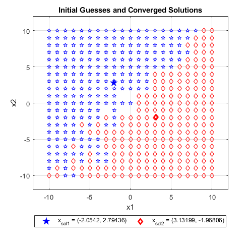
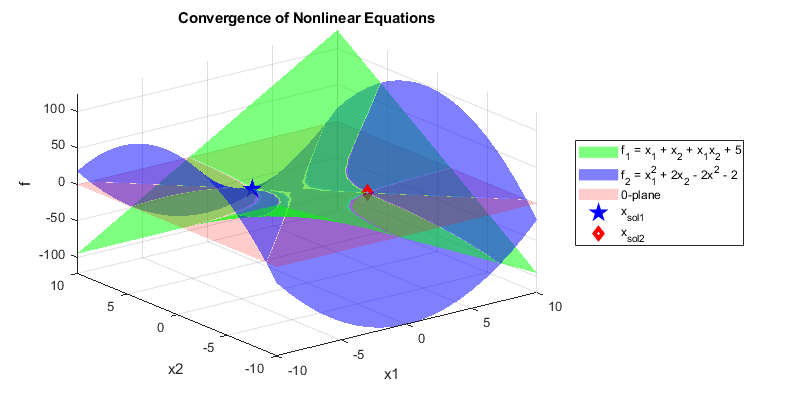

Contents
Problem Set 4, Number 1
% set4_prob1
Exam 2 version
clear; clc; close all J_fn = @(x) ... [ 1+x(2), 1+x(1) ; 2*x(1), 2-2*x(2) ]; fn = @(x) ... [ x(1) + x(2) + x(1)*x(2) + 5 ; x(1)^2 + 2*x(2) - x(2)^2 - 2 ]; % initialize xg_arr = []; f_arr = []; for i = -10 : 10 for j = -10 : 10 xg = [i; j]; k = 0; % first 6 iterates while norm(fn(xg)) > 0.00000001 k = k + 1; xg = xg - inv(J_fn(xg)) * fn(xg); end xg_arr = [xg_arr; i, j, xg(1), xg(2)]; f = fn(xg); f_arr = [f_arr; i, j, f(1), f(2)]; end end
Warning: Matrix is singular to working precision. Warning: Matrix is singular to working precision. Warning: Matrix is singular to working precision. Warning: Matrix is singular to working precision. Warning: Matrix is singular to working precision. Warning: Matrix is close to singular or badly scaled. Results may be inaccurate. RCOND = 1.110223e-16.
unique converged values
tol = 1e-5; xg_u = rmmissing(xg_arr); xg_u(:,3) = round(xg_u(:,3), 5); xg_u(:,4) = round(xg_u(:,4), 5); % unique x1 row_u = unique(xg_u(:,3)); for j = 1:length(row_u) for i = 1:length(xg_u) if xg_u(i,3) == row_u(j) xg_u(i,5) = j; end end end % first unique points temp = xg_u(:,3) == row_u(1); idx = find(temp, 1, 'first'); u1 = xg_u(idx, 3:4); % second unique points temp = xg_u(:,3) == row_u(2); idx = find(temp, 1, 'first'); u2 = xg_u(idx, 3:4);
plot
ftitle = 'Initial Guesses and Converged Solutions'; figure('name', ftitle, 'position', [100 100 500 500]) % plot unique values plot(u1(1), u1(2), 'bp', 'linewidth', 2); grid on; hold on; plot(u2(1), u2(2), 'rd', 'linewidth', 2); % plot initial guesses for i = 1:length(xg_u) if xg_u(i, 5) == 1 plot(xg_u(i,1), xg_u(i,2), 'bp'); elseif xg_u(i, 5) == 2 plot(xg_u(i,1), xg_u(i,2), 'rd'); end end legend(sprintf('x_{sol1} = (%g, %g)', u1(1), u1(2)), ... sprintf('x_{sol2} = (%g, %g)', u2(1), u2(2)), ... 'location', 'southoutside', 'orientation', 'horizontal') xlim([-10 10]) ylim([-10 10]) bigger_ylim bigger_xlim ylabel('x2'); xlabel('x1'); title(ftitle);
Convergence points
There are 2 convergence points (labelled in the legend). The plot above shows that initial guesses that lie closer to either solution will converge towards that respective solution. There is a zone in between the convergence points where Newton's method fails to converge; at those points, the calculated Jacobian is singular, and thus further computations to find a solution fail. The figure below shows how the nonlinear equations intersect with each other and the 0-plane.
x = [-10:1:10]; [X1,X2] = meshgrid(x); F1 = X1 + X2 + X1.*X2 + 5; F2 = X1.^2 + 2*X2 - X2.^2 - 2; % sanity check for i = 1:length(x) for j = 1:length(x) temp = fn([x(i),x(j)]); F1_test(i,j) = temp(1); F2_test(i,j) = temp(2); end end ftitle = 'Convergence of Nonlinear Equations'; figure('name', ftitle, 'position', [100 100 800 400]) surf(X1,X2,F1, 'FaceColor','g', 'FaceAlpha',0.5, 'EdgeColor','none'); hold on; grid on; surf(X1,X2,F2, 'FaceColor','b', 'FaceAlpha',0.5, 'EdgeColor','none'); surf(X1,X2,zeros(size(F2)), 'FaceColor','r', 'FaceAlpha',0.2, 'EdgeColor','none'); plot3(u1(1), u1(2), 0, 'bp', 'linewidth', 3) plot3(u2(1), u2(2), 0, 'rd', 'linewidth', 3) xlabel('x1'); ylabel('x2'); zlabel('f'); legend('f_1 = x_1 + x_2 + x_1x_2 + 5', 'f_2 = x_1^2 + 2x_2 - 2x^2 - 2', '0-plane', ... sprintf('x_{sol1}', u1(1), u1(2)), ... sprintf('x_{sol2}', u2(1), u2(2)), ... 'location', 'eastoutside'); title(ftitle);